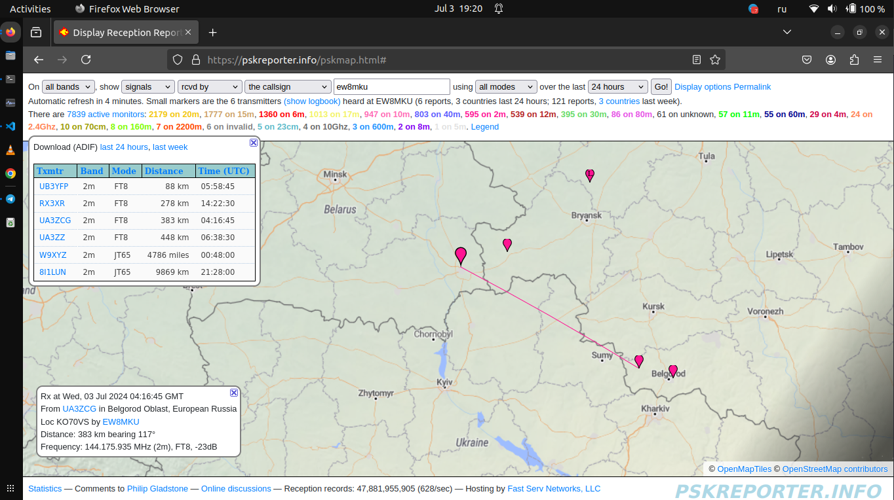
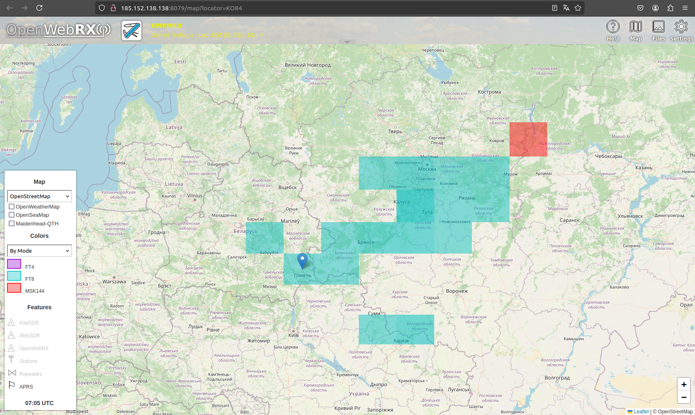

Прохождения которые были принял SDR за июль 2024 года.
Принимал 02-03 07-2024. Начало активности трехдневной.

Принимал 04-07-2024. Приём Европейской части России.

И MSK144 декод тоже был.

Не самый лучний приём на rtl-sdr. Перегруз от уровней соседей.
Принимал 08-07-2024.
JT65 или это помеха.
Принимал 09-07-2024. Целый день.
Принимал 10-07-2024. Вечернее время.
Принимал 11-07-2024. Не работал нормально приём и приём мусорных пакетов.
Принимал 13-07-2024.
Принимал 13-07-2024. Даже сообщениее приходили вместо нормального сообщения ft8.